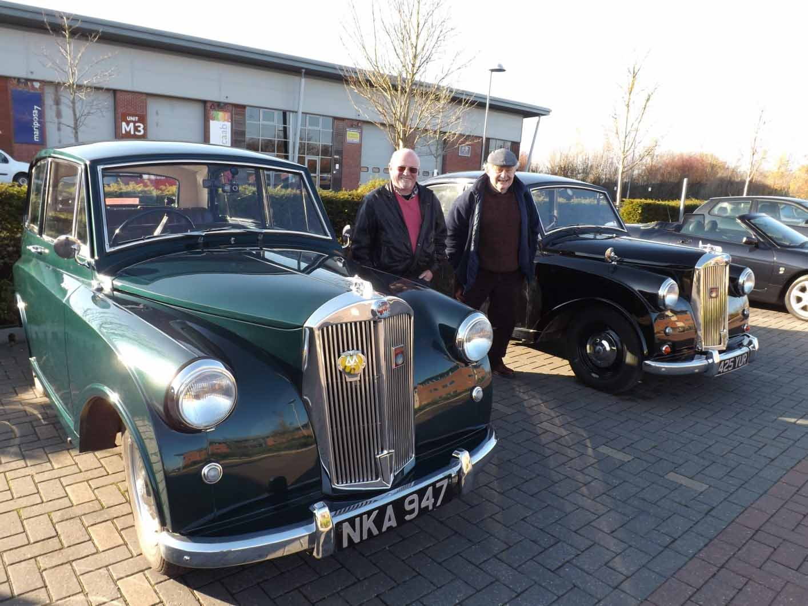

<link href="{{ site.baseurl }}/events/article.css" rel="stylesheet" type="text/css">
<main>
    <article>
        <ol id="breadcrumb">
            <li>
                <a href="{{ site.baseurl }}/">Home</a>
            </li>
            <li>
                <a href="{{ site.baseurl }}/events">Events</a>
            </li>
            <li>
                <a href="{{ site.baseurl }}/events/local">Local</a>
            </li>
            <li>Market Harborough Winter Meet 2018</li>
        </ol>
        <div id="content">
            <h1>Market Harborough Winter Meet</h1>
            <h2>Harborough Innovation Centre, Leicestershire, 18<sup>th</sup> November 2018</h2>
            <p>Member Roger Huntley and I met up on a lovely November morning at the Innovation Centre near Market Harborough today. Roger travelled from Atherstone, a distance of about 30 miles (or it would have been if he had been able to find the location, the marshals trying to get his attention as he drove past at least twice) whilst I travelled the 15 miles from Blaby. We joined about 20 other classics whose owners had taken the chance to give their cars an outing in the sun. I also had the added bonus of Roger doing a little fettling to my carb to improve the tuning.</p>
            <p>Paul Burgess (1200)</p>
            
        </div>
    </article>
    <aside>
        <h2>Members’ cars in attendance</h2>
        <ul class="disableListStyles">
            <li>
                <h3>Paul Burgess</h3>
                <div>
                    <div class="numberPlateMarker">NKA 947</div>
                </div>
            </li>
            <li>
                <h3>Roger Huntley</h3>
                <div>
                    <div class="numberPlateMarker">425 YUR</div>
                </div>
            </li>
        </ul>
    </aside>
</main>
